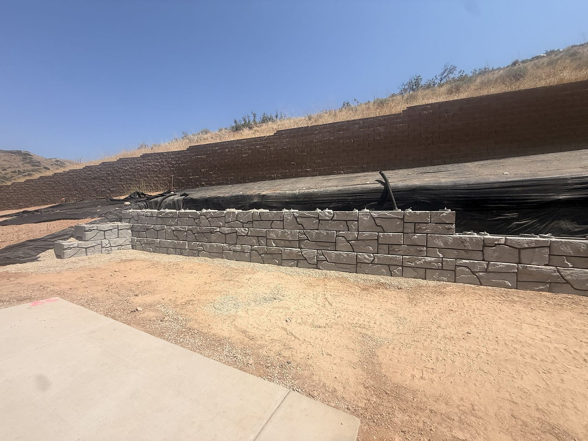
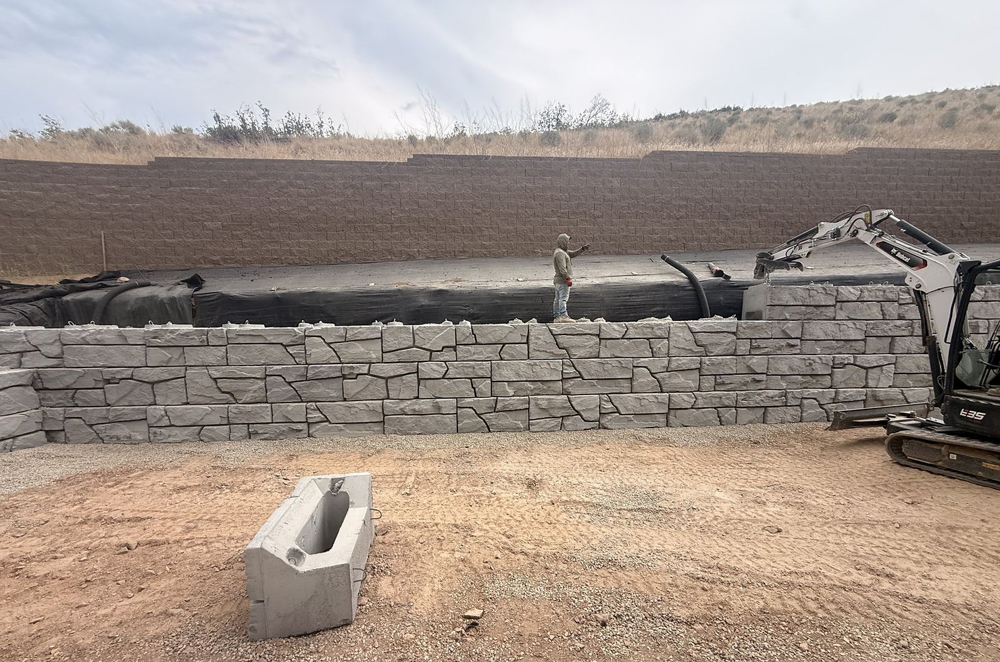
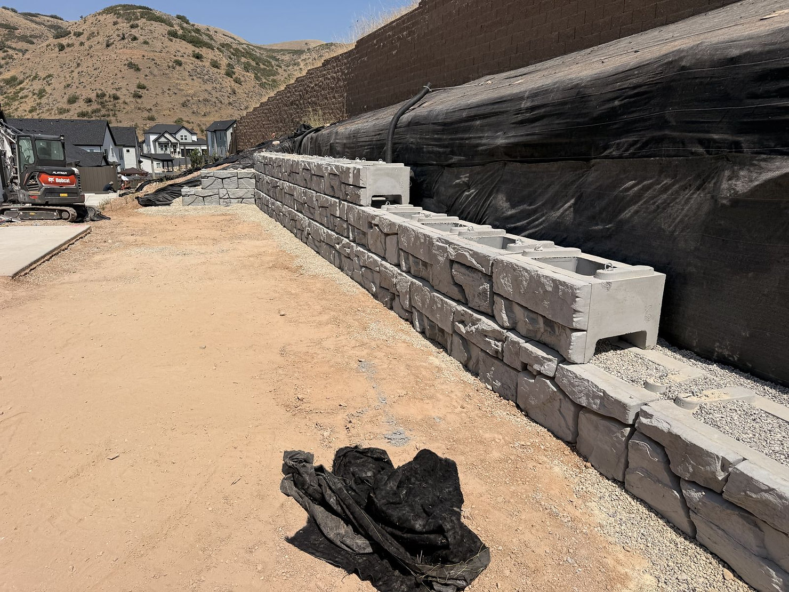
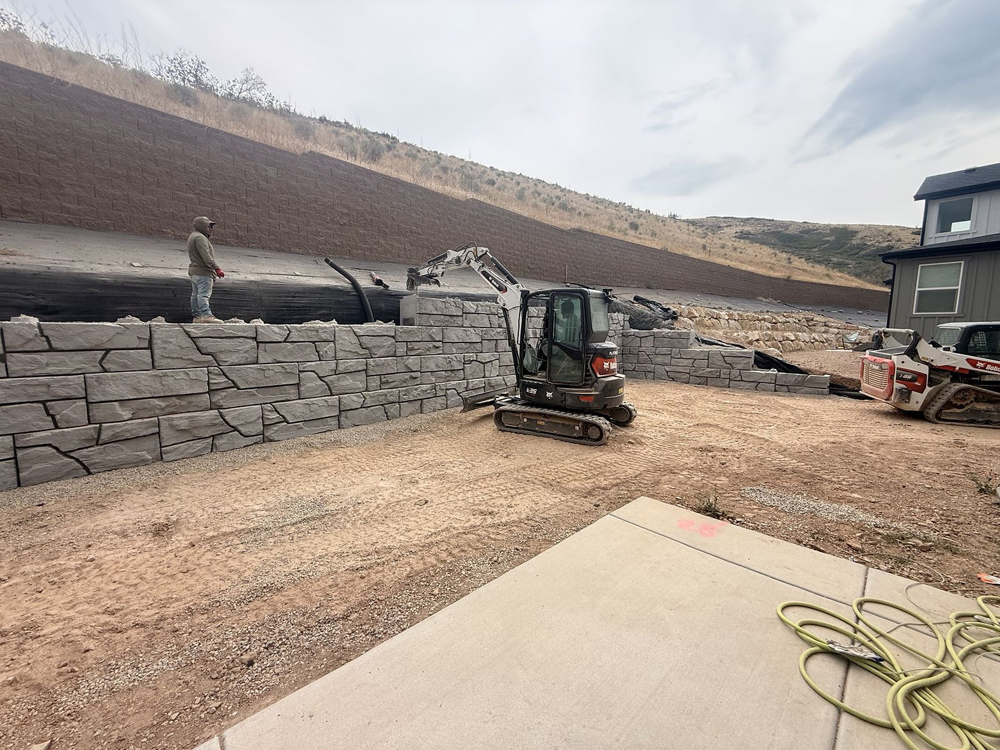
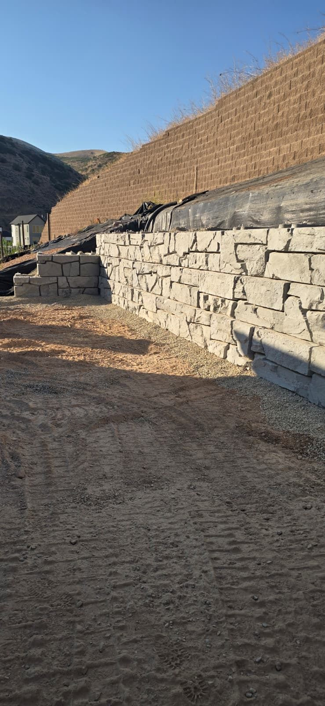
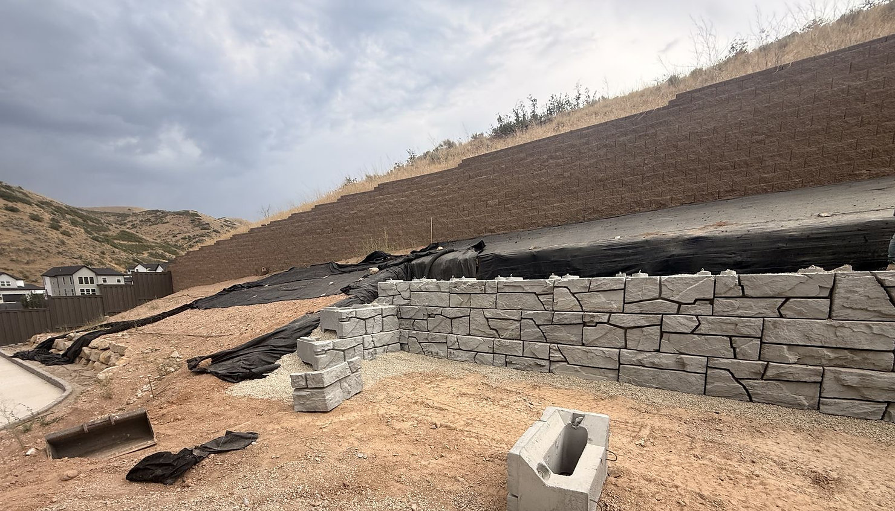

Retaining Walls in Lehi, UT: How to Turn a Sloped Yard Into Usable Space

If you live in Lehi, there's a good chance your yard isn't perfectly flat. Newer neighborhoods near Traverse Mountain, homes along the foothills, and lots that step down toward the street all share the same challenge: a slope that's hard to mow, hard to plant, and hard to enjoy. A well-built retaining wall fixes that. It holds back soil, controls erosion, and turns an awkward hillside into level ground you can actually use for a patio, lawn, garden, or play area.
This guide walks Lehi homeowners through the basics: when you need a retaining wall, which materials make sense here, why drainage matters so much, what to know about permits, and what affects the price of your project.
Do You Actually Need a Retaining Wall?
Not every slope needs a wall, but these are the most common signs that one would help:
Soil is washing away. After spring snowmelt or a summer thunderstorm, you see mud on the sidewalk or rivulets cut into your beds.
You can't use part of your yard. A steep bank takes up space that could be a patio, a flat lawn for the kids, or raised garden beds.
Water is heading toward your house. If grading pushes runoff toward your foundation, a wall paired with proper drainage can redirect it.
A neighbor's yard sits higher than yours. Lot lines in Lehi's newer subdivisions often create grade changes between properties that need to be held back.
You want to add a feature. Tiered planters, seat walls around a fire pit, or a level pad for a pergola often start with a retaining wall.
If any of these sound familiar, it's worth having a pro look at the slope before it gets worse.
Common Retaining Wall Materials for Lehi Yards
The right material depends on the height of the wall, the look you want, and how much soil it needs to hold. Here are the options we see most often in Utah County.
Segmental Concrete Block
Interlocking concrete block walls are one of the most popular choices for residential yards. The blocks stack without mortar, come in many colors and textures, and can be built in gentle curves. They pair nicely with paver patios and walkways, so the whole backyard feels designed as one space. Taller block walls usually need geogrid reinforcement layered into the soil behind them. For larger walls we often use Olympus precast concrete Verti Block, oversized textured units set with an excavator.

Natural Boulders
Boulder walls fit right in with Utah's mountain setting. Large stones are set with heavy equipment and stacked so they lock together. They're a great fit for a natural, rugged look along foothill lots, and they blend well with xeriscape plantings and native grasses.
Natural Stacked Stone
Flagstone or ledgestone walls have a hand-crafted, high-end look. They work especially well for shorter walls, seat walls, and garden borders where you want texture and character close to where people gather.
Poured or Veneered Concrete
For a clean, modern design, poured concrete walls can be finished smooth or faced with stone veneer. These are often chosen for contemporary homes or where a wall ties directly into steps or a structure.
We'll help you weigh appearance, durability, and budget so the wall suits both your property and the way you plan to use it.
Why Drainage Makes or Breaks a Retaining Wall
Most retaining wall failures aren't about the blocks or stones. They're about water. When soil behind a wall gets saturated, it gets heavier and pushes harder against the wall. Over time, that pressure can cause bulging, leaning, or collapse.
Lehi's weather adds to the challenge. Winter brings snow and repeated freeze-thaw cycles, and spring melt can send a lot of water through the soil in a short time. A properly built wall typically includes:
A compacted gravel base so the wall sits on a stable, level foundation.
Free-draining gravel backfill behind the wall instead of native soil.
A perforated drain pipe at the base to carry water out and away.
Filter fabric to keep fine soil from clogging the drainage gravel.
Reinforcement such as geogrid for taller walls, based on the design.

These parts are buried once the wall is finished, so you won't see them. That's exactly why it matters who builds your wall. Cutting corners on drainage is the easiest way to save money up front and the fastest way to pay for a rebuild later.

Permits, Engineering, and HOA Rules in Lehi
Before you build, check the rules. Many Utah cities require a building permit and an engineered design once a retaining wall goes over a certain height, or when a wall supports a driveway, a structure, or another wall above it. The exact requirements can change, so we always recommend confirming current rules with Lehi City's building department before construction starts.
If you're in a neighborhood with an HOA, you may also need architectural approval for materials, colors, or wall placement. And because retaining walls often sit near property lines, it's smart to know exactly where your lines are and to call Blue Stakes of Utah (811) before any digging so underground utilities are marked.
When you work with Ironhills Landscaping, we'll talk through these steps with you during your estimate so there are no surprises.
What Affects the Cost of a Retaining Wall?
Every wall is different, so we don't believe in one-size-fits-all pricing. These are the main factors that shape your quote:
Height and length. Taller and longer walls need more material, more excavation, and often reinforcement or engineering.
Material choice. Concrete block, boulders, natural stone, and poured concrete all carry different material and labor costs.
Site access. If equipment can't easily reach the backyard, more of the work may have to be done by hand.
Soil and slope conditions. Clay-heavy soil, rocky ground, or a steep grade can add excavation and drainage work.
Drainage needs. Properties with heavy runoff may need extra drain pipe, outlets, or regrading.
Add-ons. Steps, caps, built-in lighting, seat walls, and planting beds all add value and cost.
The best way to get a real number is an on-site look at your yard. That's why our estimates are free.
Design Ideas for a Sloped Lehi Backyard
A retaining wall doesn't have to be purely functional. Some of our favorite ways to make a wall the star of the yard:
Tiered terraces that step down a hillside, each level planted with drought-tolerant perennials.
A level patio pad held up by a wall, finished with pavers and a fire pit.
Seat walls that double as extra seating around an outdoor kitchen or gathering area.
Built-in stairs that connect upper and lower levels of the yard safely.
Low-voltage lighting set into wall caps for evening ambiance and safer footing.
Raised vegetable beds that make gardening easier on the back and knees.
Pairing a wall with water-wise plants and efficient drip irrigation also keeps the terraces looking good without heavy watering.

Frequently Asked Questions
How tall can a retaining wall be without a permit in Lehi?
It depends on current city code and what the wall is supporting. Many Utah cities require a permit and engineering above a certain height or when a wall holds up a driveway or structure. Check with Lehi City's building department, and we'll help you sort out what applies to your project.
What is the best retaining wall material for Utah winters?
Segmental concrete block and natural boulders both hold up well in Utah County when they're installed on a solid base with good drainage. The installation quality matters as much as the material.
How long does it take to build a retaining wall?
It varies with the wall's size, materials, site access, and any permits or engineering. We'll give you a realistic timeline with your estimate.
Can I build a retaining wall myself?
A short garden border can be a DIY project. Taller walls, walls near structures, and walls holding back a lot of soil are best left to experienced installers, because drainage and reinforcement mistakes can lead to costly failures.
Do you build retaining walls outside of Lehi?
Yes. Ironhills Landscaping serves homeowners across Utah County, including Orem, Pleasant Grove, American Fork, Saratoga Springs, Vineyard, Spanish Fork, Mapleton, and Salem.

Ready to Level Out Your Lehi Yard?
A sloped yard doesn't have to be wasted space. With the right retaining wall, solid drainage, and a thoughtful design, you can gain a patio, a lawn, or a garden you'll use for years.
Call Ironhills Landscaping or book your free estimate today. We'll walk your property, talk through materials and design, and give you a clear plan for your retaining wall project.